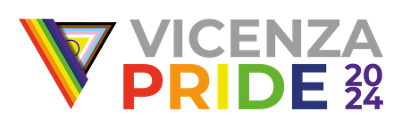

Introduzione
Siamo una comunità di persone queer e minoritarie. Crediamo fortemente nell’intersezionalità delle lotte per i diritti: la lotta LGBTQIA+ non è separabile dalla lotta transfemminista, antirazzista, antiabilista, ecologista. In questa drammatica escalation di fascismo a livello locale, nazionale e mondiale, e a fronte della minaccia posta dal cambiamento climatico, sentiamo ora più che mai la necessità di fare rete e di pretendere tutela dai nostri governi.
Rivendichiamo con gioia la libertà di essere noi stessә, di amare chi vogliamo e come vogliamo, di percorrere le nostre stesse strade sentendoci al sicuro; e lottiamo per costruire un paese dichiaratamente e incondizionatamente antifascista, che garantisca tutti i diritti e gli strumenti per renderci davvero tuttә partecipi della democrazia.
Questo Pride, come tutti i Pride, è una rivolta.
1 - Famiglie
Chiediamo il matrimonio egualitario e il riconoscimento legale di ogni modello relazionale basato sul consenso: monogamie, non monogamie etiche e poliamore.
Chiediamo l’estensione a tutte le persone di diritti ed agevolazioni riservati alle famiglie “tradizionali”. In particolare:
- chiediamo diritti adottivi;
- chiediamo l’accesso alla fecondazione medicalmente assistita;
- chiediamo l’accesso alla gestazione per altrә, etica e altruistica;
- chiediamo il riconoscimento alla nascita dei figli e delle figlie delle coppie omogenitoriali;
- chiediamo la trascrizione dei certificati di nascita regolarmente rilasciati all'estero dei figli e delle figlie di coppie omogenitoriali;
- chiediamo un congedo parentale equo per genere, esteso anche ai genitori intenzionali;
- chiediamo l’assistenza e il sostegno economico alla genitorialità;
- chiediamo la possibilità per ogni famiglia di adottare, e un sistema adottivo che metta davvero al centro gli interessi e il benessere delle persone adottate, in particolare per quanto riguarda le adozioni interrazziali.
2 - Disabilità e neurodivergenze
Vogliamo l’abolizione di ogni barriera architettonica, fisica o sensoriale in tutti gli spazi per garantire alle persone disabili, grasse e neurodivergenti la piena partecipazione alla vita pubblica.
Vogliamo misure di accessibilità ad eventi culturali e manifestazioni, come il collegamento online o la diretta social, la presenza di aree di decompressione, l’impiego di interpreti LIS.
Vogliamo risorse e strumenti di supporto in contesto familiare e psicoterapeutico affinché le persone neurodivergenti, in particolare minori, non vengano spinte al contenimento e all’adeguamento alle norme sociali ma sostenute nella comprensione di sé e valorizzate nella loro unicità.
Vogliamo la regolamentazione nazionale dell’assegnazione dei sussidi alle persone disabili.
Vogliamo un piano di formazione e sensibilizzazione in tutti gli ambienti lavorativi riguardo la salute mentale e le neurodivergenze.
3 - Scuola e lavoro
Chiediamo un piano obbligatorio di educazione affettiva e sessuale nelle scuole, laica ed inclusiva, incentrata sul consenso e sulla consapevolezza.
Chiediamo un piano di sensibilizzazione e informazione sulla cultura dello stupro e del possesso, anche all’interno delle relazioni queer.
Chiediamo campagne di sensibilizzazione sulle infezioni sessualmente trasmissibili e sulle scelte riproduttive.
Chiediamo la formazione di tutto il personale scolastico e lavorativo sulle questioni LGBTQIA+ e sul contrasto a patriarcato, abilismo e razzismo.
Chiediamo la presenza di insegnanti di sostegno qualificatә e stabili.
Chiediamo l’introduzione dell’identità alias.
Chiediamo l’introduzione del congedo mestruale.
Chiediamo la presenza di spazi gender neutral.
Chiediamo il riconoscimento della Giornata mondiale contro l’Omo-bi-lesbo-trans-afobia e la promozione di iniziative sul tema.
Chiediamo la presenza di persone professioniste della salute mentale formate, esterne alla scuola e iscritte all’albo, con un numero adeguato di ore di servizio.
Inoltre:
- sosteniamo l’importanza del diritto allo studio rispettoso di tutte le minoranze, che prescinda dal merito, dalla classe socio-economica, dall’etnia, o da altre fonti di discriminazione;
- sosteniamo l’importanza del riconoscimento delle tematiche di salute mentale in ambito scolastico e lavorativo e dell’attuazione di procedure di tutela della salute mentale delle persone.
4 - Salute e benessere
Nonostante diverse delle seguenti rivendicazioni siano già formalmente tutelate dalla legge, mancano piani strutturali, norme attuative e/o finanziamenti che le garantiscano con reale efficacia. Pertanto:
Chiediamo maggiore formazione e ricerca in ambito medico e psicologico con attenzione alle peculiarità e necessità delle persone LGBTQIA+, in particolare trans e intersex, neurodivergenti, razzializzate e donne.
Chiediamo reparti, protocolli medici e burocrazia non divisi per genere e rispettosi delle identità non binarie.
Chiediamo formazione del personale medico-sanitario con un’ottica di rispetto della persona, della sua identità e diversità: sulle questioni LGBTQIA+, e contro il razzismo, l’abilismo, il sanismo, contro lo stigma sulle IST (infezioni sessualmente trasmissibili) e lo stigma sul corpo grasso, contro la cultura della dieta e la violenza ginecologica, tenendo conto del minority stress.
Chiediamo formazione del personale medico-sanitario sulle tematiche di disturbi alimentari e disturbi da dismorfismo corporeo, specialmente quando connessi alle esperienze LGBTQIA+.
Chiediamo terapie gratuite per le IST.
Chiediamo l’accesso agevole e gratuito ad ogni tipo di contraccettivo, alla pillola abortiva e ad assorbenti e coppette mestruali.
Chiediamo l’accesso agevole e gratuito a un servizio psicologico di base e alle terapie farmacologiche.
Chiediamo l’accesso agevole e gratuito ai servizi ginecologici e andrologici per le persone trans che hanno eseguito la rettifica anagrafica e per le persone intersex.
5 - Autodeterminazione
Ribadiamo l’importanza di un sistema sanitario che fornisca alle persone di ogni genere ed orientamento tutti gli strumenti e le informazioni per disporre del proprio corpo in modo libero e consapevole: dalle terapie farmacologiche ed ormonali, alle chirurgie, all’aborto e alle scelte riproduttive.
Chiediamo un percorso di affermazione di genere condotto da figure professionali specializzate, competenti e in rete, diffuse capillarmente sul territorio.
Chiediamo che quel percorso sia realmente gratuito, non obbligatorio in ogni sua fase, e tarato sulle esigenze della persona.
Chiediamo che quel percorso tenga conto delle specifiche esigenze delle persone non binarie, inclusa la possibilità di rettificare il nome sui documenti senza dover cambiare il genere.
Chiediamo un superamento delle sole due opzioni di sesso anagrafico nei documenti, con la possibilità di indicare un terzo genere o di non indicarlo affatto.
Chiediamo l’esplicito divieto degli interventi cosmetici alla nascita sui genitali delle persone intersex, in linea con le raccomandazioni internazionali.
Specificatamente all’aborto:
- chiediamo una legge 194 aggiornata per garantire il diritto all’aborto sicuro, libero e gratuito, sia chirurgico sia farmacologico;
- chiediamo consultori laici e capillari sul territorio, con almeno unə ginecologə e un’anestesista non obiettorə in ogni struttura;
- chiediamo la cessazione immediata di ogni tentativo istituzionale di dissuadere dall’aborto, l’abolizione dei cimiteri dei feti e l’interdizione delle associazioni antiabortiste dai consultori;
- chiediamo spazi sicuri e non divisi per genere per le persone di genere non binario e non conforme, trans, queer, e di ogni origine ed etnia.
Per quanto riguarda media ed istituzioni:
- pretendiamo che media ed istituzioni promuovano una narrazione e una rappresentazione rispettosa ed aggiornata di tutte le persone, di tutti i corpi e di tutte le minoranze;
- pretendiamo che media ed istituzioni abbandonino gli stereotipi pietistici, ispirazionali, ridicolizzanti e patologizzanti sulle persone disabili, grasse e neurodivergenti;
- pretendiamo che media ed istituzioni abbandonino rappresentazioni stigmatizzanti e ridicolizzanti dei corpi non conformi.
6 - Lotta ai conflitti, alle guerre e alla violenza
Chiediamo la reale applicazione da parte delle fonti di informazione delle linee guida deontologiche (Convenzione di Istanbul, Manifesto di Venezia, T.U. dei doveri del giornalista) per un’informazione che sia libera, fedele e rispettosa delle tematiche di violenza di genere.
Chiediamo la creazione di spazi sicuri e il potenziamento dei centri antiviolenza affinché diventino la via preferibile in caso di necessità.
Chiediamo il contrasto alla cultura dello stupro, alla violenza domestica e a tutte le dinamiche di discriminazione.
Chiediamo libertà di movimento e apertura dei confini.
Chiediamo la reintroduzione della protezione speciale per le persone richiedenti asilo.
Chiediamo semplificazione delle procedure di accesso a visti e permessi di soggiorno.
Chiediamo pari diritti e opportunità per le persone nate o cresciute in Italia (comprese le persone di etnia Rom e SintI), indipendentemente dall'origine dei loro genitori o dalla comunità di appartenenza.
Chiediamo lo ius solis per l’accesso alla cittadinanza.
Chiediamo un sistema di accoglienza e integrazione statale che prescinda dalla provenienza della persona immigrata.
Chiediamo l’abolizione dei CPR (Centri di permanenza e rimpatrio) per migranti.
Chiediamo la cancellazione del memorandum d'intesa stipulato tra Italia e Libia e la fine dei rimpatri forzati.
Chiediamo che salvare vite non venga più criminalizzato e sosteniamo l'operato delle ONG su tutte le rotte migratorie.
Inoltre:
- denunciamo la violenza delle forze dell’ordine di stampo machista, razzista e patriarcale, acuita verso persone razzializzate, senza fissa dimora, in stato di difficoltà psico-fisica, sex worker e donne trans;
- denunciamo l’ordinaria repressione del dissenso nelle piazze;
- denunciamo l’assenza di codici identificativi per i membri delle forze dell’ordine;
- denunciamo la disumanità delle condizioni di vita nelle carceri, ancora più evidente nel caso di persone queer e appartenenti a minoranze;
- denunciamo la tolleranza di raduni fascisti.
In quanto persone queer, non possiamo che rifiutare il colonialismo in tutte le sue manifestazioni. Quindi:
- denunciamo il rainbow washing e il pinkwashing come strumenti di legittimazione di politiche coloniali;
- denunciamo ogni media, istituzione, brand, azienda, multinazionale, Stato o governo che sostenga tali politiche;
- denunciamo ideologie fasciste portatrici di intolleranza religiosa e suprematismo etnico o razziale;
- denunciamo progetti di apartheid, pulizia etnica e genocidi su popoli minoritari;
- denunciamo l’invio di armi destinate a genocidi e conflitti nel mondo da parte dell’Italia;
- denunciamo gli stati oppressori come origine di ogni violenza e sosteniamo i popoli oppressi nella loro lotta di resistenza (Palestina, Congo, Sudan e tutte le altre aree di conflitto come raccolto da www.atlanteguerre.it) .
Conclusioni
In questo manifesto dichiariamo come immaginiamo il nostro futuro, ma le nostre rivendicazioni non saranno soltanto desideri espressi alle stelle cadenti.
Le nostre proteste non basteranno mai da sole per migliorare la vita di tuttə. Le istituzioni e le agenzie economiche ci ignorano e se ci notano, ci censurano e manganellano in quanto minaccia allo status quo. Messi di fronte ad un futuro di incertezza, ci troviamo nella posizione di doverci prendere quello che ci spetta liberandoci dall’oppressione sistemica. E allora saremo in piazza per manifestare la nostra volontà ma soprattutto il nostro potere.
La domanda che poniamo a chi sarà in piazza per questo Pride 2024 è questa: oltre a manifestare, cosa siete dispostə a fare?